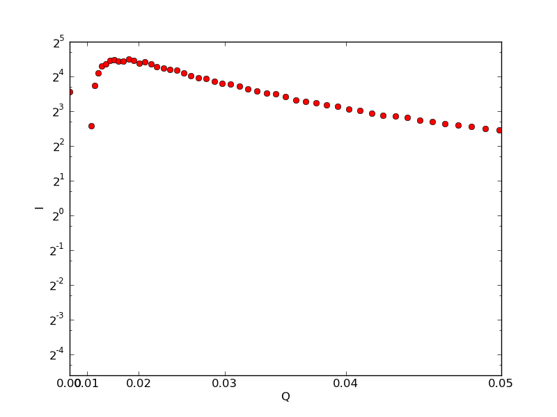

We collected data on I22 in mid-May on a range of SMALPs and this data was uploaded to the lab notebook system at http://biolab.isis.rl.ac.uk The aim here is to record the process of grabbing data from the notebook and processing it using some Python scripts.
First we set a general blog URL and a date range to get data for.
BLOG_URL = "http://biolab.isis.rl.ac.uk/camerons_labblog"
FROM_DATE_STRING = "2011-03-01"
TO_DATE_STRING = "2011-06-01"
def parse_date(date_string):
return datetime.datetime.strptime(date_string, '%Y-%m-%d')
from_date = parse_date(FROM_DATE_STRING)
to_date = parse_date(TO_DATE_STRING)
tracking['blog-url'] = BLOG_URL
tracking['from-date'] = FROM_DATE_STRING
tracking['to-date'] = TO_DATE_STRING
For this experiment I need to get I22 SAXS data files. The key is DATA_TYPE and the value is SAXS_Diamond.
There are 33 data files found between the dates set. Which are named:
I22-29552
I22 29553 - b4
I22 29554 - buffer
I22 29590 - A4
I22 29555 - b3
I22 29556 - empty capillary
I22 29557 - b2
I22 29558 - b1
I22 29559 - water
I22 29589 - A5
I22 29560 - b4
I22 29561 - buffer
I22 29562 - b3
I22 29588 - A6
I22 29563 - empty capillary
I22 29564 - b2
I22 29565 - b1
I22 29587 A7
I22 29567 - DLPC - lower counts
I22 29574 - A3 - seems ok
I22 29575 - a2
I22 29576 - a1
I22 29586 A8
I22 29577 - mono-olein
I22 29578 - DMPC
I22 29579 - b9
I22 29585 - A9
I22 29580 - b8
I22 29581 - b7
I22 29582 - b6
I22 29584-DLPC
I22 29583 - b5
I22 29591 BUFFER
Of these "I22 29554 - buffer", "I22 29561 - Buffer", and "I22 29591 BUFFER" are the buffer runs. The first of these was for a shorter collection time as are the runs up to 29558 according to the run record for the first set of samples.
The sample runs from 29560 to 29565 should have the buffer run 29561 subtracted.
subtracted_data = []
list1 = ['I22 29560 - b4', 'I22 29562 - b3', 'I22 29564 - b2',
'I22 29565 - b1']
background = 'I22 29561 - buffer'
for data in list1:
subtracted = sas_patterns[name_mapping[data]] - sas_patterns[
name_mapping[background]]
subtracted_data.append(subtracted)
The second set of runs are handled similarly
list2 = ['I22 29574 - A3 - seems ok',
'I22 29575 - a2',
'I22 29576 - a1',
'I22 29577 - mono-olein',
'I22 29578 - DMPC',
'I22 29579 - b9',
'I22 29580 - b8',
'I22 29581 - b7',
'I22 29582 - b6',
'I22 29583 - b5',
'I22 29584-DLPC',
'I22 29585 - A9',
'I22 29586 A8',
'I22 29587 A7',
'I22 29588 - A6',
'I22 29589 - A5',
'I22 29590 - A4']
background = 'I22 29591 BUFFER'
for data in list2:
subtracted = sas_patterns[name_mapping[data]] - sas_patterns[
name_mapping[background]]
subtracted_data.append(subtracted)
Here is a graph
